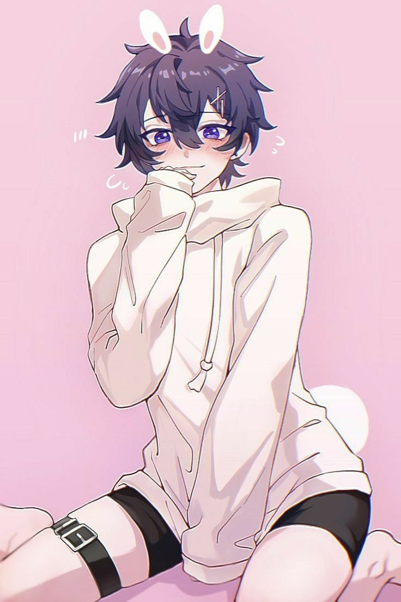

Sebuah jejak yang tertinggal
Yang dikubur belum tentu hilang. Ada yang menunggu untuk ditemukan — pelan-pelan, di balik yang tampak.
Jangan hanya melihat. Simpan file-nya — rahasia jarang tertulis di permukaan.